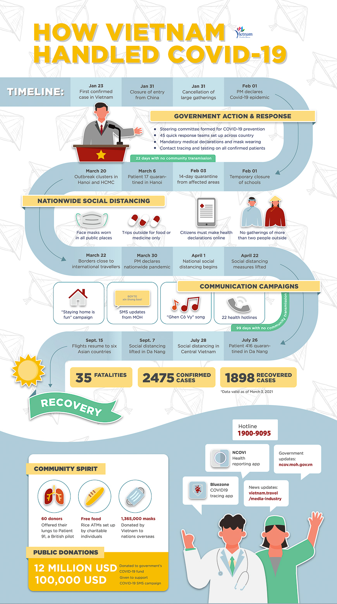
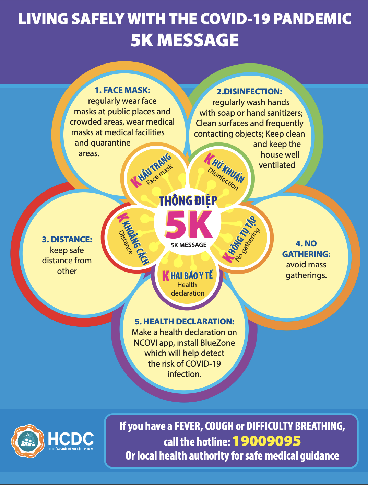

| Homepage | News | Form | About Me |
Vietnam's Ministry of Health confirmed 839,662 cases of COVID-19 as of October 11, 2021. 782,199 of the injured individuals, on the other hand, have recovered and have been freed from hospitals. The pandemic has also claimed the lives of 20,555 Vietnamese people. The most recent cases of community transmission have been recorded in Ho Chi Minh City, Binh Duong, Dong Nai, An Giang, and Binh Thuan, among other places.
| Confirmed infections | 839.662 |
| Deaths | 20.555 |
On January 23, 2020, the first verified cases of COVID-19 were discovered in Vietnam. The country's borders have been closed to international visitors since March 22, 2020. At present moment, only Vietnamese natives, foreign diplomats on official business, and highly trained professionals are permitted to enter Vietnam. Anyone entering Vietnam from February 1, 2021, until further notice will be subjected to medical examinations and a 21-day quarantine.
Vietnam has been actively monitoring the situation from the commencement of the new coronavirus (COVID-19) outbreak and has put in place a series of proactive, comprehensive steps to counteract the virus's spread within the country and prepare its public health institutions. Due to its previous experience with various epidemics, Vietnam is well-positioned to protect its citizens as well as visitors traveling through. Travelers to Vietnam may have questions regarding the virus's spread in the country, as well as the restrictions in place. The following is a comprehensive description of the COVID-19 situation in Vietnam as it pertains to tourists.
To prevent the spread of COVID-19, Vietnam is only allowing foreign experts and individuals traveling for official or diplomatic purposes into the country, who must undergo medical exams and a 21-day quarantine at their own expense. The Immigration Department of Vietnam has stated that all foreigners who entered Vietnam on visa exemptions, e-visas, or tourism visas after March 1, 2020 will be granted automatic stay extensions until May 30, 2021. Travellers who are still in the nation must notify local authorities, either through their landlords or hotels, of their temporary residency and submit Vietnam's online health declaration.
Visitors who arrived in the nation before March 1, 2020, may be eligible for an extension if they can present an official letter from their embassy or consulate saying that they were unable to leave for objective reasons (letter must be translated to Vietnamese). The extension is also available to foreigners who have been quarantined or treated in Vietnam for COVID-19. When they leave Vietnam, they must have their certification documents to show immigration officers.
Vietnam’s Prime Minister officially declared COVID-19 an epidemic in Vietnam on Feb. 1, 2020. Although confirmed cases remain low within the country, authorities are taking swift and strict preventative measures to contain the virus. The government has formed a National Steering Committee for COVID-19 Prevention and Control to direct efforts and communicate to the public. Below are the key actions taken by Vietnam to prevent the spread of COVID-19:


Visitors to Vietnam are advised to take reasonable measures against
COVID-19 while on the country. The World Health Organization
recommends the following simple precautions to protect yourself and
your loved ones:
1. If you have a fever or a cough, don't travel. If you get a fever,
cough, or trouble breathing, seek medical attention and inform them of
your recent travel history.
2. Maintain a social chasm. Keep at least a metre away from others,
especially if they are sneezing, coughing, or have a fever.
3. Hands should be washed with soap and water on a frequent basis. You
may also spray your hands as often as you like with an alcohol-based
hand sanitizer.
4. When you cough or sneeze, use a tissue to cover your mouth and
nose. After coughing or sneezing, dispose of soiled tissues promptly
and wash your hands.
5. Contact with living animals should be avoided. If you come into
contact with live animals or animal products at marketplaces, wash
your hands with soap and water.
6. Only eat food that has been thoroughly cooked. Ensure that your
meals, particularly animal proteins and dairy products, are fully
cooked and prepared in a hygienic manner.
7. Single-use masks should be discarded. If you use a single-use mask,
make sure it covers your nose and mouth, don't touch it, and wash your
hands after you take it off.
Anyone suffering signs of the virus, such as fever, cough, or trouble
breathing, should contact Vietnam's health hotline at 19003228 right
away.